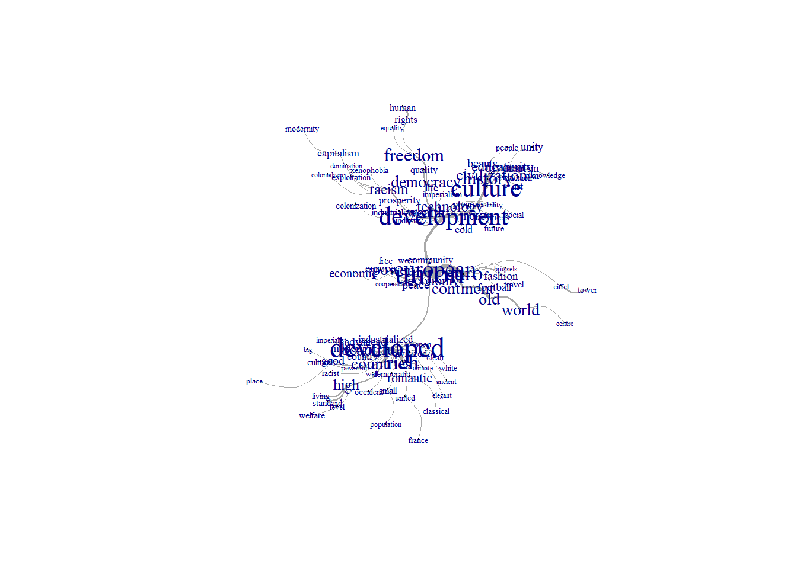

Extrait de l’enquête « EuroBroadMap » financée par le 7ème programme cadre de recherche et développent de la commission européenne (FP7/2007-2013 ; grant agreement n° 225260 ; “Visions de l’Europe dans le monde”, www.eurobroadmap.eu)” .
Question ouverte sous forme de mots associés posée en complément à l’interprétation d’une question en cartographie “Draw your limit of Europe”. Quesls ont les mots que vous associés le plus à “Europe”. Choississez 5 mots au maximum.
Questionnnaire posé dans la langue du pays et réponses traduites en aanglais et saisies par chaque équipe partenaire du projet. 9340 étudiants intéerrogés dans 18 pays et 43 villes. - France, Belgique, Portugal, Roumanie, Hongrie, Malte Suède - Moldavie, Russie, Turquie, Tunisie - Cameroun, Chine, Inde, Brésil, Azebaïdjan, Egypte
Le corpus utilisé dans cet exemple contient 8143 reponses a la QO mots associés à Europe. Les textes,variable textuelle, sont composés de quelques mots (textes courts) et sont associés à des métadonnées. G_State (pays d’enquête) G_City (ville d’enquête) G_Study (Domaine d’étude des enquêtés) A1_Gender (genre) A10_LevInc (niveau de revenu) A11_LevEdu_f (niveau d’éducation du père) A12_LevEdu_m (niveau d’éducation de la mère) PaysVis (nombre de pays visités) Nblang (nombre de langues parlées) VecuEtranger (a vécu à l’étranger)
Voir également Brennetot A., Emsellem K., Guérin-Pace F., Garnier B. 2013. Dire l’Europe à travers le monde.Les mots des étudiants dans l’enquête EuroBroadMap, Cybergéo http://cybergeo.revues.org/25684
Les mots cités par les répondants ont étés concaténés pour former un texte court (de 1 à 5 mots). 8443 étudiants sur les 9343 interrogés ont cité au moins un mot L’ensemble des textes correspondants aux réponses correspond à 40 873 mots dont 4 977 mots distincts/différents
Nous utilisons R.temis dont le principe est de faciliter les étapes essentielles de l’analyse textuelle (importation du corpus et métadonnées, nettoyage et analyses) en s’appuyant au maximum sur les packages existants (tm, FactoMineR, explor, igraph, Shiny..).
library(R.temis)## Warning: le package 'R.temis' a été compilé avec la version R 4.1.3## Warning: le package 'tm' a été compilé avec la version R 4.1.3## Warning: le package 'FactoMineR' a été compilé avec la version R 4.1.3## Warning: le package 'explor' a été compilé avec la version R 4.1.3library(dplyr)## Warning: le package 'dplyr' a été compilé avec la version R 4.1.3library(questionr)## Warning: le package 'questionr' a été compilé avec la version R 4.1.3Le corpus et les métadonnées (variables qualitatives) sont dans un “tableau” ; la variable textuelle est en 14e colonne.
#corpus <- import_corpus("EBM_iram.txt", format="alceste", language="en")
corpus <- import_corpus("Data/EBM_temis_BG_tot_sansAZEGSW2.csv",format="csv",textcolumn=14, language="en")
corpus## <<VCorpus>>
## Metadata: corpus specific: 1, document level (indexed): 13
## Content: documents: 8143Le corpus est court, il ne sera pas découpé.
Affichage d’un extrait du tableau lexical entier (TLE) ou DocumentTermMatrix (DTM), essentiellement rempli de 0.
#stopwords("en")
dtm <- build_dtm(corpus, remove_stopwords = T, remove_numbers = T)
#dtm <- build_dtm(corpus, remove_stopwords = F, remove_numbers = F)
dtm## <<DocumentTermMatrix (documents: 8143, terms: 4765)>>
## Non-/sparse entries: 36161/38765234
## Sparsity : 100%
## Maximal term length: 22
## Weighting : term frequency (tf)inspect(dtm)## <<DocumentTermMatrix (documents: 8143, terms: 4765)>>
## Non-/sparse entries: 36161/38765234
## Sparsity : 100%
## Maximal term length: 22
## Weighting : term frequency (tf)
## Sample :
## Terms
## Docs continent culture developed development euro european freedom history
## X1761 5 0 0 0 0 0 0 0
## X2579 0 0 0 0 0 0 0 0
## X3769 0 0 0 0 0 2 1 0
## X4631 0 0 1 0 0 0 0 0
## X5079 0 0 0 0 0 0 0 0
## X5893 0 0 0 0 0 0 0 0
## X5912 0 0 0 0 0 0 0 0
## X7087 0 0 0 0 0 0 0 0
## X7813 1 0 0 0 0 0 0 0
## X7897 0 0 0 0 0 0 0 0
## Terms
## Docs rich union
## X1761 0 0
## X2579 0 3
## X3769 0 1
## X4631 0 0
## X5079 0 1
## X5893 0 0
## X5912 0 0
## X7087 0 0
## X7813 1 0
## X7897 0 0Les lignes du tableau lexical (dtm) correspondent ici aux 8143 reponses et les colonnes aux 4765 mots différents utilisés par les étudiants.
On crée un premier lexique (dictionnaire) : ensemble des mots distincts du corpus
dictemis <- dictionary(dtm)
head(dictemis)## Term Occurrences Stopword
## abduction abduct 1
## aberrant aberr 1
## abide abid 1
## abiding abid 1
## abroad abroad 2
## absence absenc 1#View(dictemis)Via le commande View La lecture interactive du lexique par ordre de fréquences permet de repérer le registre du vocabulaire et en particulier les mots les plus fréquemment utilisés. La lecture par ordre alphabétique) permet de rechercher un terme précis et observer sa fréquence d’apparition ou trouver les mots mal orthographiés ou abréviés en vue de les corriger(si besoin).
frequent_terms(dtm)## Global occ. Global %
## union 1125 3.0701635
## developed 975 2.6608083
## culture 868 2.3688017
## development 866 2.3633436
## european 643 1.7547690
## euro 593 1.6183173
## rich 575 1.5691947
## freedom 430 1.1734847
## history 421 1.1489234
## continent 376 1.0261169
## old 362 0.9879104
## countries 354 0.9660781
## democracy 352 0.9606200
## beautiful 346 0.9442458
## world 344 0.9387878
## power 330 0.9005813
## civilization 313 0.8541877
## high 298 0.8132522
## racism 270 0.7368392
## technology 265 0.7231941
## wealth 259 0.7068199
## diversity 252 0.6877166
## economy 248 0.6768005
## education 234 0.6385940
## romantic 208 0.5676391On peut représenter cette distribution par un nuage de mots; La taille de la police utilié pour afficher chaque mot dépend de son occurrence. Plus le mot est cité dans les réponses, plus sa taille est grande. Ajouter une note de lecture !
cloud<-word_cloud(dtm, color="red", n=60, min.freq=10)On choisira qqs mots pour écrire la légende
Les concordances permettent, pour un mot choisit, de rassembler l’ensemble des unités de textes (ou documents) dans lesquels il apparaît. On vérifie ici l’usage de ces mots dans les titres avec la fonction concordances.
concordances(corpus, dtm, "fifa")## X938
## fifa hi-tech euro
## X940
## fifa nina richi car fashion christian dior
## X2344
## eiffel tower fiat nato european union fifa
## X3631
## stonehenge fifa high culture
## X7684
## freedom fifa tourism work revenue
## X7685
## fifa tourism
## X7686
## tourism fifa nato
## X7962
## fifa liar arrogantOn décide d’éliminer certains mots. On en fait une liste qu’on supprime du lexique. Ici zigzag et vs.
asupp <- c("zigzag", "vs")
dictemis2 <- dictemis[!rownames(dictemis) %in% asupp,]La fonction combine_terms de R.temis permet de lemmatiser et donc réduire les mots à leur “racine”/ Token. On crée alors un nouveau tableau lexical … mais on ne va pas l’utiliser par la suite.
dtm2 <- combine_terms(dtm, dictemis2)
dtm2## <<DocumentTermMatrix (documents: 8143, terms: 3656)>>
## Non-/sparse entries: 36092/29734716
## Sparsity : 100%
## Maximal term length: 17
## Weighting : term frequency (tf)La taille du vocabulaire est réduite à 3658 mots distincts au lieu de 4743 initialement.
On affiche la distibution des 10 mots les plus fréquents (occurrence et %).
frequent_terms(dtm, n=10)## Global occ. Global %
## union 1125 3.070163
## developed 975 2.660808
## culture 868 2.368802
## development 866 2.363344
## european 643 1.754769
## euro 593 1.618317
## rich 575 1.569195
## freedom 430 1.173485
## history 421 1.148923
## continent 376 1.026117On affiche les mots cooccurrents, c’est à dire présents simultanément dans les unités textuelles). Les termes qui partagent un même contexte partagent des significations similaires
cooc_terms(dtm, "france", n=10)## % Term/Cooc. % Cooc./Term Global % Cooc. Global t value Prob.
## france 19.628647 100.00000 0.20194853 74 74 Inf 0
## germany 8.488064 66.66667 0.13099364 32 48 Inf 0
## italy 6.631300 55.55556 0.12280654 25 45 Inf 0
## spain 5.835544 81.48148 0.07368392 22 27 Inf 0
## england 2.917772 36.66667 0.08187103 11 30 7.728523 0
## kingdom 2.387268 37.50000 0.06549682 9 24 6.993554 0
## poland 1.591512 85.71429 0.01910324 6 7 6.740153 0
## portugal 1.856764 46.66667 0.04093551 7 15 6.417648 0
## belgium 1.591512 66.66667 0.02456131 6 9 6.371998 0
## switzerland 1.856764 33.33333 0.05730972 7 21 5.970088 0Parmi les réponses contenant le mot “france”, ce mot représente 19% des occurrences et 66% des réponses qui contiennent “france” contiennent aussi “germany”.
Autour des mots les plus centraux (analyse de similitude)
On génère un graphe de mots où les mots les plus fréquents sont centraux et où les liens représentent les cooccurrences avec ces mots. On a le choix entre 2 affichages :
terms_graph(dtm, vertex.label.cex = 0.5, interactive = F)
Faire une Analyse factorielle des correspondances sur TLE dans le cas de ce corpus n’est pas pertinent car ces textes sont constitués de suites de mots cités (et non des phrases).
On va mettre en relation les mots et les caractéristiques des étudiants à disposition (métadonnées).
On peut afficher le tableau des métadonnées
G_State G_City G_Study A1_Gender A10_LevInc A11_LevEdu_f A12_LevEdu_m A13_Rank1 PaysVis Mixit Nblang VecuEtranger
On affiche les effectifs et répartitions des métadonnées
tab1 <- freq(meta(corpus)$G_State)
tab1## n % val%
## BEL 425 5.2 5.2
## BRA 913 11.2 11.2
## CHN 1139 14.0 14.0
## CMR 989 12.1 12.1
## FRA 547 6.7 6.7
## HUN 222 2.7 2.7
## IND 817 10.0 10.0
## MDA 205 2.5 2.5
## MLT 192 2.4 2.4
## PRT 481 5.9 5.9
## ROU 383 4.7 4.7
## RUS 764 9.4 9.4
## SEN 175 2.1 2.1
## TUN 209 2.6 2.6
## TUR 682 8.4 8.4tab2 <- freq(meta(corpus)$G_Study)
tab2## n % val%
## 175 2.1 2.1
## ART 1201 14.7 14.7
## BUS 1379 16.9 16.9
## ENG 1301 16.0 16.0
## HEA 1260 15.5 15.5
## POL 1251 15.4 15.4
## SHS 1576 19.4 19.4tab3 <- freq(meta(corpus)$A1_Gender)
tab3## n % val%
## F 4015 49.3 49.3
## M 4128 50.7 50.7Attention, il faudra peut-être faire un sous-corpus pour enlever les non réponses. Ex Corpus2 <- corpus[meta(corpus, "G_Study") != " "]
On peut utiliser des éléments quantitatifs sur le corpus pour le présenter, par exemple sa taille (nombre d’occurrences) ou le nombre de mots distincts (indicateur de “richesse” du vocabulaire). Pour faire ces comparaisons, le corpus est découpé en sous-parties à l’aide des modalités des métadonnées. Ici on compare par domaine d’étude
#lexical_summary(dtm, corpus, "G_State", unit="global" )
lexical_summary(dtm, corpus, "G_Study", unit="global" )##
## Per category total: ART BUS ENG
## Number of terms 807.000000 5163.000000 6160.000000 5600.000000
## Number of unique terms 327.000000 1430.000000 1577.000000 1524.000000
## Percent of unique terms 40.520446 27.697075 25.600649 27.214286
## Number of hapax legomena 214.000000 885.000000 965.000000 946.000000
## Percent of hapax legomena 26.517968 17.141197 15.665584 16.892857
## Number of words 885.000000 5422.000000 6497.000000 6055.000000
##
## Per category total: HEA POL SHS Corpus total
## Number of terms 5578.000000 5847.000000 7488.000000 36643.000000
## Number of unique terms 1490.000000 1511.000000 1786.000000 4765.000000
## Percent of unique terms 26.712083 25.842312 23.851496 13.003848
## Number of hapax legomena 918.000000 913.000000 1075.000000 2647.000000
## Percent of hapax legomena 16.457512 15.614845 14.356303 7.223754
## Number of words 5943.000000 6276.000000 8098.000000 39176.000000Le corpus contient au total 39176 mots mais seulement 36643 sont pris en compte dans les analyes et 4765 mots distincts (après suppression de mots-outils et chiffres).
Le vocabulaire d’une sous-popoulation construite selon les modalités d’une variable qualitative (métadonnée) est comparé à l’ensemble. Un mot (term) est spécifique positivement (ou caractéristique) si sa fréquence y est “anormalement élevée” (la probabilité calculées à partir du modèle hypergéométrique pour les valeurs égales ou supérieures à la sous-fréquence constatée est inférieure au seuil fixé au départ). On dit aussi que ce mot est sur employé.
On affiche les mots specifiques de chaque sous-population (ici contruite avec la variable sexe) par ordre de valeur-test décroissante.
specific_terms(dtm,meta(corpus)$A1_Gender, n=10)## $F
## % Term/Level % Level/Term Global % Level Global occ. t value
## fashion 0.669729341 69.540230 0.47485195 121 174 5.336719
## monuments 0.099629158 94.736842 0.05185165 18 19 4.013511
## travel 0.387446726 69.306931 0.27563245 70 101 3.968577
## ---------- NA NA NA NA NA NA
## continent 0.824708031 39.627660 1.02611686 149 376 -3.734723
## uefa 0.005534953 5.263158 0.05185165 1 19 -3.899915
## old 0.774893452 38.674033 0.98791038 140 362 -4.030856
## xenophobia 0.132838878 27.272727 0.24015501 24 88 -4.102991
## world 0.702939060 36.918605 0.93878776 127 344 -4.589863
## occident 0.116234018 24.418605 0.23469694 21 86 -4.617441
## football 0.260142802 29.375000 0.43664547 47 160 -5.048483
## Prob.
## fashion 0e+00
## monuments 0e+00
## travel 0e+00
## ---------- NA
## continent 1e-04
## uefa 0e+00
## old 0e+00
## xenophobia 0e+00
## world 0e+00
## occident 0e+00
## football 0e+00
##
## $M
## % Term/Level % Level/Term Global % Level Global occ. t value
## football 0.60831180 70.625000 0.43664547 113 160 5.048483
## occident 0.34991387 75.581395 0.23469694 65 86 4.617441
## world 1.16817399 63.081395 0.93878776 217 344 4.589863
## xenophobia 0.34453058 72.727273 0.24015501 64 88 4.102991
## old 1.19509044 61.325967 0.98791038 222 362 4.030856
## uefa 0.09689922 94.736842 0.05185165 18 19 3.899915
## continent 1.22200689 60.372340 1.02611686 227 376 3.734723
## ---------- NA NA NA NA NA NA
## travel 0.16688200 30.693069 0.27563245 31 101 -3.968577
## monuments 0.00538329 5.263158 0.05185165 1 19 -4.013511
## fashion 0.28531438 30.459770 0.47485195 53 174 -5.336719
## Prob.
## football 0e+00
## occident 0e+00
## world 0e+00
## xenophobia 0e+00
## old 0e+00
## uefa 0e+00
## continent 1e-04
## ---------- NA
## travel 0e+00
## monuments 0e+00
## fashion 0e+00#specific_terms(dtm,meta(corpus)$G_State, n=10)Exemple d’interprétation : le mot “fashion” est specifique des filles. Il représente 0,66% de l’ensemble des occurrences des mots cités par des femmes et 69% des occurrences du mot “fashion” sont cités par des filles.
Le mot “footbal” est spécifique aux garçons respectivement (0.6% et 70 %). Ces valeurs sont significatives au seuil de 5% (p-value < 0.05 et t-value > 2).
Observez les mots spécifiques cités par les enquêtés en Russie. Que pensez-vous du mots mother ?
Le calcul de la distance est fondé sur la métrique du Khi2 et mesure l’écart entre le profil d’un document et le profil moyen du document de la sous-population. Ce critère a tendance à favoriser les documents longs car plus ils contiennent de « mots », plus ils ont de chance de contenir de « mots » cooccurrents, et donc de se rapprocher du profil moyen.
characteristic_docs(corpus,dtm,meta(corpus)$A1_Gender, ndocs=5)## Documents characteristic of: F
## X7545: distance 9.124
## development diversity euro european union rich history
##
## X3498: distance 10.18
## culture history euro civilization european union
##
## X4819: distance 10.63
## freedom history culture development union
##
## X7100: distance 11.94
## european union euro continent rich diversity
##
## X7174: distance 12.52
## old continent european union culture
##
## Documents characteristic of: M
## X6500: distance 9.92
## old continent european union euro development
##
## X7526: distance 10.09
## development culture european union
##
## X3130: distance 10.17
## continent union euro development culture
##
## X6207: distance 11.27
## culture european union euro
##
## X3212: distance 12.13
## union rich countries euro continent powerLe tableau lexical agrégé croise en lignes les mots (termes) et en colonnes les modalités d’une ou plusieurs variables qualtatives (métadonnées) ; c’est un tableau de contigence sur lequel on peut exécuter une analyse factorielle. Celle-ci permet de structurer l’ensemble des mots en fonction ici des caractéristiques des enquêtés.
La fonction corpus_ca exécute une Analyse factorielle sur le tableau lexical créé ici avec les variables pays, domaine d’étude, genre et avoir_vecu_a_l_etranger. On a vérifié que les modalités étaient réparties “équitablement”. On cherche à repérer des profils types.
Les plans factoriels permettnt d’observer la position réciproque des mots et des métadonnées et de faire émerger des groupes de représentations qui s’attachent à des sous-populations
Rappel des noms de variables a disposition : G_State G_City G_Study A1_Gender A10_LevInc A11_LevEdu_f A12_LevEdu_m A13_Rank1 PaysVis Mixit Nblang VecuEtranger
resTLA <- corpus_ca(corpus, dtm, variables=c("G_State", "G_Study", "A1_Gender","VecuEtranger"), sparsity=0.98)
#explor(resTLA)
res <- explor::prepare_results(resTLA)
explor::CA_var_plot(res, xax = 1, yax = 2, lev_sup = FALSE, var_sup = FALSE,
var_sup_choice = , var_hide = "None", var_lab_min_contrib = 0, col_var = "Position",
symbol_var = "Type", size_var = NULL, size_range = c(10, 300), labels_size = 10,
point_size = 56, transitions = TRUE, labels_positions = NULL, xlim = c(-1.01,
1.85), ylim = c(-0.939, 1.92))Les résultats de l’analyse factorielle (plans factoriels, contributions axes par axes) s’affichent dans une fenêtre interactive à l’exécution de la commande explor(). Les valeurs des contributions axes par axes permettent de déterminer les modalités des variables qui différencient le plus les champs lexicaux des réponses. Le signe - ou + des valeurs des coordonnées permettent de repérer les oppositions.
On affiche les titres qui sont aux extrémités des axes (coordonnées les plus grandes sur les axes 1 et 2)
extreme_docs(corpus, resTLA, 1 , ndocs=5)## Most extreme documents on the positive side of axis 1:
## X233
## romantic pretty relaxed
## X250
## pretty romantic mysterious
## X269
## romantic mean and ferocious
## X280
## romantic arts
## X283
## romantic leisure elegant fairy
##
##
## Most extreme documents on the negative side of axis 1:extreme_docs(corpus, resTLA, 2 , ndocs=5)## Most extreme documents on the positive side of axis 2:
## X485
## colonization scientific progress racism
## X498
## modernity industry racism
## X505
## colonisators racism egoism struggle people invading
## X509
## exclusion racism arrogant
## X512
## eldorado racism colonialism exploited mercenaires
##
##
## Most extreme documents on the negative side of axis 2: